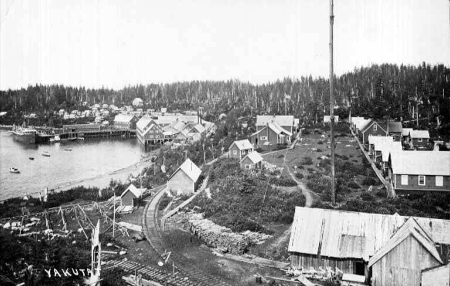
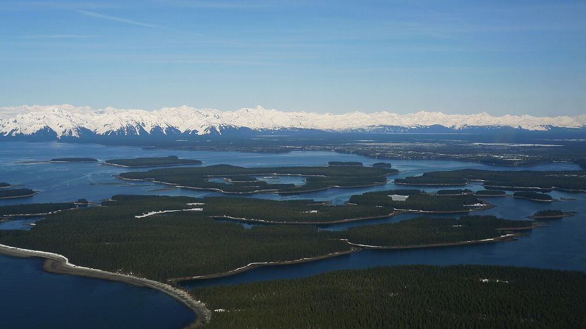

Directory / Southeast Alaska / Yakutat, AK
Yakutat tides — Monti Bay small boat harbor & Yakutat Bay
High and low tides for the coming week from NOAA station 9453220 (Yakutat, Yakutat Bay — 59.5485, -139.7334). Times are local (AKST/AKDT). Heights are feet above Mean Lower Low Water (MLLW). Yakutat is the only town with a full-service small boat harbor on the open Gulf of Alaska coast between Cross Sound and Prince William Sound (the outside run from Cape Spencer to Cape Hinchinbrook). The town sits on Monti Bay, just inside the southeast shore of Yakutat Bay, behind Ocean Cape and a screen of small forested islands. Up-bay, Disenchantment Bay ends at the face of Hubbard Glacier, and the St. Elias Range, topped by 18,008-ft Mount St. Elias, fills the skyline. The City and Borough of Yakutat runs the small boat harbor. Trollers, set-netters, longliners, charter boats, and a summer stream of Situk River anglers keep it busy.
The outside coast, a 15-ft swing & dark winter grid tides
Weather first. Yakutat gets two kinds of forecast. The api.weather.gov zone lookup at the tide station returns PKZ053 Yakutat Bay. Just outside Ocean Cape, the lookup returns PKZ651 Cape Fairweather to Icy Cape. West of the bay, the coast toward Icy Bay and Cape Yakataga falls in PKZ652 Icy Cape to Cape Suckling. In the forecast issued 3:47–3:49 PM AKST Wed Nov 18, 2026, Yakutat Bay carried a Small Craft Advisory Thursday (E 25 kt and 11 ft seas Thursday night). Outside it was worse: a Gale Warning in PKZ651 (SE 30 kt, gusts to 50 kt, 16 ft seas Thursday night) and in PKZ652 (E 45 kt, gusts to 60 kt, seas to 18 ft). Only a few anchorages (such as Lituya Bay to the southeast and Icy Bay to the west) break the coast between Cross Sound and Hinchinbrook Entrance, so read all three zones and the Fairweather Ground buoy (46083) before you commit to the outside. The live forecasts are below.
The tide swing. Mean Higher High Water at Yakutat is about 10.1 ft above MLLW, and the great diurnal range is 10.07 ft (NOAA 2012–2016 epoch). In the NOAA predictions fetched 2026-11-18, the biggest swing in the next five weeks is on Wednesday, November 25, 2026: a 12.8 ft high at 12:38 PM, then a −2.5 ft low at 7:38 PM, a drop of about 15.3 ft in seven hours. Minus tides come every evening from Nov 22 through Nov 29, again Dec 6–12, and again from Dec 21, all after dark. Check slip lines, ramp depth, and the launch before those evenings.
Grid work in winter. The city harbor has a tidal grid, and Yakutat has no travelift, so the grid and trailering are the local options. Daylight lows are poor this time of year. FAA’s Yakutat site shows civil twilight from about 7:34 AM to 4:33 PM AKST on Nov 19. The lowest daylight lows in the next five weeks are only about 2.9 ft at 2:16 PM on Wed Dec 2 and 2.7 ft at 2:18 PM on Fri Dec 18. Call the harbormaster (907-410-7306, VHF 16) before you plan a grid tide.
Fuel, ice & arrival. Delta Western’s Yakutat terminal lists fuel for boats, Monday–Friday 8:30 a.m.–5 p.m., with after-hours fueling by appointment. Plan weekend fuel ahead. Groceries, hardware, and the post office are along Max Italio Dr and Mallott Ave, a short drive from the harbor. The ferry stops only in some seasons (see the AMHS link below), and Alaska Airlines jets connect to Juneau, Anchorage, and Seattle.
Computed from NOAA CO-OPS hi/lo predictions for 9453220 (2026-11-19 through 2026-12-23) and station datums (2012–2016 epoch; MHHW 11.27 ft and MLLW 1.19 ft above station datum), the NWS Juneau coastal waters forecast text and api.weather.gov zone lookups at 59.548,-139.735 and 59.45,-139.90, the FAA WeatherCams Yakutat site record, the City and Borough of Yakutat harbor page, and Delta Western’s site list, all checked 2026-11-18. Not for navigation.
Yakutat then & now
Historic

.jpg){kind=link}
Current

.jpg){kind=link}
Official NOAA predictions Station home NOAA chart viewer View on Windy
Port Sponsor — Yakutat, AK
Top placement for fuel, lodges, charters, processors, and marine businesses.
$25–$50 / month
Tide data: NOAA CO-OPS station 9453220, predictions (hi/lo, MLLW, local standard/daylight time). Refreshed with each nightly build; the marine-weather snapshot time below shows the latest fetch. NOAA does not publish a current-prediction station inside Monti Bay in our port list; see NOAA current predictions for the region.
Thursday, November 26, 2026
| Tide | Time (local) | Height (MLLW) |
|---|---|---|
| High | 2:11 AM | 9.4 ft |
| Low | 7:23 AM | 3.5 ft |
| High | 1:25 PM | 12.7 ft |
| Low | 8:26 PM | -2.3 ft |
Friday, November 27, 2026
| Tide | Time (local) | Height (MLLW) |
|---|---|---|
| High | 3:01 AM | 9.3 ft |
| Low | 8:14 AM | 3.6 ft |
| High | 2:14 PM | 12.2 ft |
| Low | 9:15 PM | -1.8 ft |
Saturday, November 28, 2026
| Tide | Time (local) | Height (MLLW) |
|---|---|---|
| High | 3:54 AM | 9.2 ft |
| Low | 9:10 AM | 3.9 ft |
| High | 3:07 PM | 11.4 ft |
| Low | 10:07 PM | -1.0 ft |
Sunday, November 29, 2026
| Tide | Time (local) | Height (MLLW) |
|---|---|---|
| High | 4:51 AM | 9.1 ft |
| Low | 10:14 AM | 4.1 ft |
| High | 4:07 PM | 10.4 ft |
| Low | 11:01 PM | -0.1 ft |
Monday, November 30, 2026
| Tide | Time (local) | Height (MLLW) |
|---|---|---|
| High | 5:51 AM | 9.2 ft |
| Low | 11:29 AM | 4.1 ft |
| High | 5:16 PM | 9.2 ft |
| Low | 11:58 PM | 0.8 ft |
Tuesday, December 1, 2026
| Tide | Time (local) | Height (MLLW) |
|---|---|---|
| High | 6:50 AM | 9.5 ft |
| Low | 12:54 PM | 3.7 ft |
| High | 6:37 PM | 8.3 ft |
Wednesday, December 2, 2026
| Tide | Time (local) | Height (MLLW) |
|---|---|---|
| Low | 12:59 AM | 1.8 ft |
| High | 7:47 AM | 9.8 ft |
| Low | 2:16 PM | 2.9 ft |
| High | 8:04 PM | 7.8 ft |
Thursday, December 3, 2026
| Tide | Time (local) | Height (MLLW) |
|---|---|---|
| Low | 1:59 AM | 2.5 ft |
| High | 8:38 AM | 10.2 ft |
| Low | 3:24 PM | 2.0 ft |
| High | 9:25 PM | 7.7 ft |
Marine weather & cameras
NWS marine forecast — Yakutat Bay (PKZ053)
Issued 221 PM AKST Wed Nov 25 2026. Snapshot fetched 2026-11-25 21:31 AKST from NWS text product. Official zone forecast · Raw text
- .TONIGHT...N wind 10 kt early in the evening becoming light, then becoming N 15 kt late. Seas 8 ft. S swell.
- .THU...NW wind 15 kt becoming S in the afternoon. Seas 6 ft. S swell.
- .THU NIGHT...SE wind 10 kt. Seas 6 ft. S swell.
- .FRI...E wind 15 kt. Seas 6 ft. S swell.
- .FRI NIGHT...E wind 15 kt. Seas 6 ft. S swell. Rain.
- .SAT...NE wind 10 kt. Seas 6 ft.
- .SUN...NE wind 10 kt. Seas 6 ft.
- .MON...E wind 15 kt. Seas 5 ft.
NWS marine forecast — Cape Fairweather to Icy Cape out to 15 NM (PKZ651)
Issued 222 PM AKST Wed Nov 25 2026. Snapshot fetched 2026-11-25 21:31 AKST from NWS text product. Official zone forecast · Raw text
...SMALL CRAFT ADVISORY THROUGH LATE THURSDAY NIGHT...
- .TONIGHT...E wind 20 kt becoming N 15 kt late. Seas 11 ft. SE swell.
- .THU...NW wind 15 kt becoming E in the afternoon. Seas 10 ft. SE swell.
- .THU NIGHT...E wind 15 kt diminishing to 10 kt late. Seas 9 ft. SE swell.
- .FRI...E wind 15 kt. Seas 8 ft. SE swell.
- .FRI NIGHT...SW wind 15 kt. Seas 9 ft. SE swell.
- .SAT...NE wind 15 kt. Seas 8 ft.
- .SUN...NE wind 10 kt. Seas 7 ft.
- .MON...E wind 20 kt. Seas 6 ft.
NWS marine forecast — Icy Cape to Cape Suckling out to 15 NM (PKZ652)
Issued 222 PM AKST Wed Nov 25 2026. Snapshot fetched 2026-11-25 21:31 AKST from NWS text product. Official zone forecast · Raw text
...SMALL CRAFT ADVISORY THROUGH LATE THURSDAY NIGHT...
- .TONIGHT...E wind 15 kt becoming N late. Seas 11 ft. SE swell.
- .THU...W wind 15 kt. Seas 10 ft. SE swell.
- .THU NIGHT...E wind 10 kt. Seas 9 ft. SE swell.
- .FRI...E wind 20 kt. Seas 8 ft. SE swell.
- .FRI NIGHT...SE wind 20 kt. Seas 8 ft. SE swell.
- .SAT...NE wind 10 kt. Seas 8 ft.
- .SUN...NE wind 10 kt. Seas 7 ft.
- .MON...E wind 25 kt. Seas 6 ft.
Nearby NDBC observation — Yakutat (YATA2, NOAA 9453220, Monti Bay)
994.6 hPa, water 47°F
Observation time 2026-11-25 20:30 AKST (converted to AKST). Attribution: NOAA NDBC station YATA2. Snapshot fetched 2026-11-25 21:31 AKST.
Nearby NDBC observation — Fairweather Ground buoy (46083, offshore SE of Yakutat)
wind 90°, 17 kt, gust 21 kt, seas 7.9 ft, air 48°F, 992.6 hPa, water 48°F
Observation time 2026-11-25 20:50 AKST (converted to AKST). Attribution: NOAA NDBC station 46083. Snapshot fetched 2026-11-25 21:31 AKST.
Nearby NDBC observation — Cape Suckling buoy (46082, Gulf of Alaska west of Icy Bay)
Live values not cached on this page (no report in the 24 hours before fetch 2026-11-25 21:31 AKST, or realtime file unavailable). Check the station page for current wind/seas: NOAA NDBC 46082. Also NDBC home.
Harbor webcams
- FAA WeatherCams — Yakutat Airport (PAYA) (NE, SE, SW, and NW views from the airport a few miles southeast of town; the SW and NW views look toward the outer coast and the bay; link only, not embedded)
- FAA WeatherCams — Cape Yakataga (NW, SW, SE, and E views about 100 miles up the coast; a look at PKZ652 weather before an Icy Bay or Cape Suckling run; link only)
We checked FAA’s public site and camera records on 2026-11-18 around 9:20 PM AKST. All four Yakutat cameras and all four Cape Yakataga cameras had new images within the past 10 minutes, and neither site was in maintenance. Expect dark frames on winter nights. We found no free public camera aimed at the small boat harbor floats. Harbor businesses with a public cam: email us and we will link it.
Yakutat boater notes (official links)
- Yakutat Harbor (City and Borough of Yakutat). The small boat harbor is north of Monti Bay at the end of Mallott Avenue. It has six main floats, a launch ramp, and a grid, with a seaplane float at the end of the central main float. Harbormaster: 907-410-7306, VHF 16. City Hall: 434 Max Italio Dr, 907-784-3323.
- ADF&G Yakutat Small Boat Harbor sheet: about 80 slips with water and power, transient moorage, and trailer parking at the launch, about 1.5 miles from the town center via Boat Harbor Road.
- Harbor forms & documents: vessel registration application, harbor rate schedule (Resolution 24-07), Title 16 harbor code, and a blank harbor map.
- Alaska Marine Highway — Yakutat terminal (YAK). Ferry service is seasonal; reservations 800-642-0066.
- ADF&G Southeast Alaska & Yakutat commercial salmon (set gillnet openers and emergency orders for the Yakutat District, Cape Fairweather to Icy Cape, and the Yakataga District, Icy Cape to Cape Suckling) and the Yakutat set gillnet area map. Sport anglers can start from the Yakutat Management Area page.
- NOAA ENC chart viewer for Monti Bay, Yakutat Bay, Disenchantment Bay, and the outside coast. We link to NOAA’s viewer and do not host charts.
Local marine & shore directory
Verified public listings only. List free · Get featured
Marine services
Moorage & marinas
Seafood processors & buyers
Fuel docks
Shipyards & haul-outs
Boat repair & mechanics
No verified listing yet — list your business free.
Marine suppliers & chandleries
Electronics sales & installation
No verified listing yet — list your business free.
Welding & fabrication
No verified listing yet — list your business free.
Canvas & upholstery
No verified listing yet — list your business free.
Surveyors
No verified listing yet — list your business free.
Towing & salvage
No verified listing yet — list your business free.
Ice & bait
Fishing charters
Ashore for boaters
Groceries & provisioning
Hardware
Liquor stores
Laundromats
No verified listing yet — list your business free.
Showers
No verified listing yet — list your business free.
Lodging
Restaurants
Medical clinics
Pharmacies
Post office & shipping
Airport & floatplane
Propane
Auto & truck rental
We checked these listings on 2026-11-18 against public sources: the City and Borough of Yakutat harbor and staff-directory pages; the ADF&G Yakutat harbor sheet; Delta Western’s site list; Leonard’s Landing Lodge’s local vendors and local charters pages; the Yakutat Chamber of Commerce business listings (addresses only where its phone numbers looked like placeholders); and each business’s own site where it has one. Seafood processors come from the ADF&G 2026 Southeast shore-based processors by port list for Yakutat (Alsek Fish, Coffee Point Seafoods, Kohne Family Seafoods, Maclay Family Fishing – Dry Bay Plant), which ADF&G notes records intent to operate rather than confirmed operation, and NOAA Fisheries’ 2025 federal processor permits (E&E Foods dba Yakutat Seafoods, Mystic Salmon, Kohne Family Seafoods). Several are small or seasonal family operations. Listings are a courtesy, not an endorsement. On 2026-11-25 we added five more rows: the Alaska Marine Lines Yakutat barge service center, Alaska Air Cargo at YAK, the FAA Yakutat Airport record, Icy Waves Surf Shop and over-the-counter medications at Mallott’s (Yakutat has no retail pharmacy we could verify), from Lynden/AML, Alaska Air Cargo, FAA NFDC and Leonard’s Landing’s local vendors page. Basic listings are free; a Featured listing is $10/month or $100/year. For corrections or a free listing, contact J.L. Miller at pacifictides.ak@gmail.com (email only).
Local news — Yakutat, AK
Plain links to local outlets. Always check the source for the latest. Local news partners welcome.
Free weekly tides & marine weather
Get a short email for your port. We do not sell your email. Privacy.
Mailing list powered by Buttondown.
Boating gear on Amazon
As an Amazon Associate I earn from qualifying purchases.
Helpful search links for common gear. Prices and availability are on Amazon.
Other Alaska ports
- Sitka tides
- Skagway tides
- Haines tides
- Juneau tides
- Cordova tides
- Prince William Sound ports overview
- Petersburg tides
- Wrangell tides
- Ketchikan tides
- Elfin Cove tides
- Gustavus tides
- Hoonah tides
- Pelican tides
- Craig tides
- Valdez tides
- Whittier tides
- Kenai tides
- Homer tides
- Kodiak tides
- Dutch Harbor tides
- Unalaska tides
Sources
- NOAA CO-OPS station 9453220 — Yakutat, Yakutat Bay (MDAPI name “Yakutat, Yakutat Bay”; lat 59.5485, lng -139.7334; NDBC/SHEF id YATA2; verified 2026-11-18). Datums (2012–2016 epoch): MHHW 11.27 ft and MLLW 1.19 ft above station datum (MHHW about 10.1 ft above MLLW); great diurnal range 10.07 ft.
- Predictions API:
api.tidesandcurrents.noaa.gov/api/prod/datagetter(product=predictions, interval=hilo, datum=MLLW, time_zone=lst_ldt) - NWS Juneau coastal waters forecast zones PKZ053 Yakutat Bay (api.weather.gov zone lookup at 59.548,-139.735 and 59.70,-139.95), PKZ651 Cape Fairweather to Icy Cape out to 15 NM (lookup at 59.45,-139.90, just outside Ocean Cape), and PKZ652 Icy Cape to Cape Suckling out to 15 NM; checked 2026-11-18
- NDBC observations: YATA2 Yakutat (NOAA 9453220 water-level station; pressure and water temperature), 46083 Fairweather Ground buoy, 46082 Cape Suckling buoy (the refresh shows a station as unavailable when its latest report is more than a day old)
- City and Borough of Yakutat: harbor, staff directory, and harbor forms pages (checked 2026-11-18)
- FAA WeatherCams site records for Yakutat (site 7, PAYA) and Cape Yakataga (site 271), checked 2026-11-18
- ADF&G 2026 Southeast Alaska shore-based processors by port; NOAA Fisheries 2025 federal processor permits
- Directory:
data/businesses.csvrows for port_slug=yakutat, each with its public source URL (verified 2026-11-18) - Photos: Shoki Kayamori, 1923, University of Washington Libraries (public domain); Joseph / Cabin On The Road (CC BY-SA 2.0) via Wikimedia Commons. Graphics: original Pacific Tides artwork.